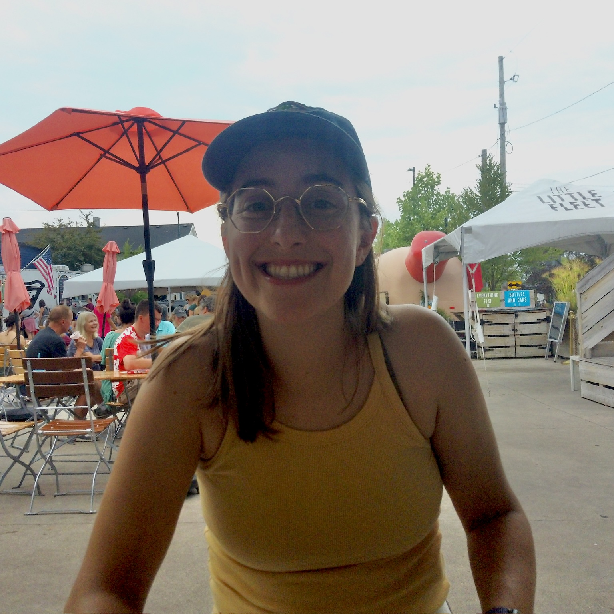

PhD Candidate in Neurobiology
University of Chicago
Email: gdirisio@uchicago.edu
I investigate how neural codes support visual perception and consequently guide behavior. To answer this, I record the electrical activity of populations of neurons, along with computational methods and psychophysics experiments. PhD Lab: Cohen Lab at the University of Chicago
Pre-PhD: DeAngelis Lab at the University of Rochester
Selected Publications
2026
Neuronal signatures of successful one-shot memory in mid-level visual cortex
2025
See all papers →
Neurons in primate area MSTd signal eye movement direction inferred from dynamic perspective cues in optic flow